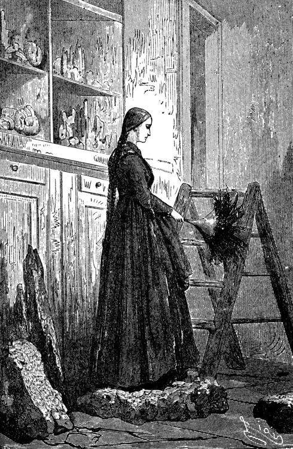

Want to listen the story?
On the 24th of May, 1863, my uncle, Professor Liedenbrock, rushed into his little house, No. 19 Königstrasse, one of the oldest streetsin the oldest portion of the city of Hamburg. Martha must have concluded that she was very much behindhand, for thedinner had only just been put into the oven. "Well, now," said I to myself, "if that most impatient of men is hungry, what a disturbance he will make!" "M. Liedenbrock so soon!" cried poor Martha in great alarm, halfopening the dining-room door. "Yes, Martha; but very likely the dinner is not half cooked, for itis not two yet. Saint Michael's clock has only just struck half-pastone." "Then why has the master come home so soon?" "Perhaps he will tell us that himself." "Here he is, Monsieur Axel; I will run and hide myself while youargue with him." And Martha retreated in safety into her own dominions. I was left alone. But how was it possible for a man of my undecidedturn of mind to argue successfully with so irascible a person as theProfessor? With this persuasion I was hurrying away to my own littleretreat upstairs, when the street door creaked upon its hinges; heavyfeet made the whole flight of stairs to shake; and the master of thehouse, passing rapidly through the dining-room, threw himself inhaste into his own sanctum. But on his rapid way he had found time to fling his hazel stick intoa corner, his rough broadbrim upon the table, and these few emphaticwords at his nephew: "Axel, follow me!" I had scarcely had time to move when the Professor was again shoutingafter me: "What! not come yet?" And I rushed into my redoubtable master's study. Otto Liedenbrock had no mischief in him, I willingly allow that; butunless he very considerably changes as he grows older, at the end hewill be a most original character. He was professor at the Johannæum, and was delivering a series oflectures on mineralogy, in the course of every one of which he brokeinto a passion once or twice at least. Not at all that he wasover-anxious about the improvement of his class, or about the degreeof attention with which they listened to him, or the success whichmight eventually crown his labours. Such little matters of detailnever troubled him much. His teaching was as the German philosophycalls it, 'subjective'; it was to benefit himself, not others. He wasa learned egotist. He was a well of science, and the pulleys workeduneasily when you wanted to draw anything out of it. In a word, hewas a learned miser. Germany has not a few professors of this sort. To his misfortune, my uncle was not gifted with a sufficiently rapidutterance; not, to be sure, when he was talking at home, butcertainly in his public delivery; this is a want much to be deploredin a speaker. The fact is, that during the course of his lectures atthe Johannæum, the Professor often came to a complete standstill; hefought with wilful words that refused to pass his struggling lips,such words as resist and distend the cheeks, and at last break outinto the unasked-for shape of a round and most unscientific oath:then his fury would gradually abate. Now in mineralogy there are many half-Greek and half-Latin terms,very hard to articulate, and which would be most trying to a poet'smeasures. I don't wish to say a word against so respectable ascience, far be that from me. True, in the august presence ofrhombohedral crystals, retinasphaltic resins, gehlenites, Fassaites,molybdenites, tungstates of manganese, and titanite of zirconium,why, the most facile of tongues may make a slip now and then. It therefore happened that this venial fault of my uncle's came to bepretty well understood in time, and an unfair advantage was taken ofit; the students laid wait for him in dangerous places, and when hebegan to stumble, loud was the laughter, which is not in good taste,not even in Germans. And if there was always a full audience tohonour the Liedenbrock courses, I should be sorry to conjecture howmany came to make merry at my uncle's expense. Nevertheless my good uncle was a man of deep learning - a fact I ammost anxious to assert and reassert. Sometimes he might irretrievablyinjure a specimen by his too great ardour in handling it; but stillhe united the genius of a true geologist with the keen eye of themineralogist. Armed with his hammer, his steel pointer, his magneticneedles, his blowpipe, and his bottle of nitric acid, he was apowerful man of science. He would refer any mineral to its properplace among the six hundred [l] elementary substances now enumerated,by its fracture, its appearance, its hardness, its fusibility, itssonorousness, its smell, and its taste. The name of Liedenbrock was honourably mentioned in colleges andlearned societies. Humphry Davy, [2] Humboldt, Captain Sir JohnFranklin, General Sabine, never failed to call upon him on their waythrough Hamburg. Becquerel, Ebelman, Brewster, Dumas, Milne-Edwards,Saint-Claire-Deville frequently consulted him upon the most difficultproblems in chemistry, a science which was indebted to him forconsiderable discoveries, for in 1853 there had appeared at Leipzigan imposing folio by Otto Liedenbrock, entitled, "A Treatise uponTranscendental Chemistry," with plates; a work, however, which failedto cover its expenses. To all these titles to honour let me add that my uncle was thecurator of the museum of mineralogy formed by M. Struve, the Russianambassador; a most valuable collection, the fame of which is European.  Such was the gentleman who addressed me in that impetuous manner.Fancy a tall, spare man, of an iron constitution, and with a faircomplexion which took off a good ten years from the fifty he must ownto. His restless eyes were in incessant motion behind his full-sizedspectacles. His long, thin nose was like a knife blade. Boys havebeen heard to remark that that organ was magnetised and attractediron filings. But this was merely a mischievous report; it had noattraction except for snuff, which it seemed to draw to itself ingreat quantities. When I have added, to complete my portrait, that my uncle walked bymathematical strides of a yard and a half, and that in walking hekept his fists firmly closed, a sure sign of an irritabletemperament, I think I shall have said enough to disenchant any onewho should by mistake have coveted much of his company. He lived in his own little house in Königstrasse, a structure halfbrick and half wood, with a gable cut into steps; it looked upon oneof those winding canals which intersect each other in the middle ofthe ancient quarter of Hamburg, and which the great fire of 1842 hadfortunately spared. It is true that the old house stood slightly off the perpendicular,and bulged out a little towards the street; its roof sloped a littleto one side, like the cap over the left ear of a Tugendbund student;its lines wanted accuracy; but after all, it stood firm, thanks to anold elm which buttressed it in front, and which often in spring sentits young sprays through the window panes. My uncle was tolerably well off for a German professor. The house washis own, and everything in it. The living contents were hisgod-daughter Gräuben, a young Virlandaise of seventeen, Martha, andmyself. As his nephew and an orphan, I became his laboratoryassistant. I freely confess that I was exceedingly fond of geology and all itskindred sciences; the blood of a mineralogist was in my veins, and inthe midst of my specimens I was always happy. In a word, a man might live happily enough in the little old house inthe Königstrasse, in spite of the restless impatience of its master,for although he was a little too excitable - he was very fond of me.But the man had no notion how to wait; nature herself was too slowfor him. In April, after a had planted in the terra-cotta potsoutside his window seedling plants of mignonette and convolvulus, hewould go and give them a little pull by their leaves to make themgrow faster. In dealing with such a strange individual there wasnothing for it but prompt obedience. I therefore rushed after him. [1] Sixty-three. (Tr.) [2] As Sir Humphry Davy died in 1829, the translator must be pardonedfor pointing out here an anachronism, unless we are to assume thatthe learned Professor's celebrity dawned in his earliest years. (Tr.)